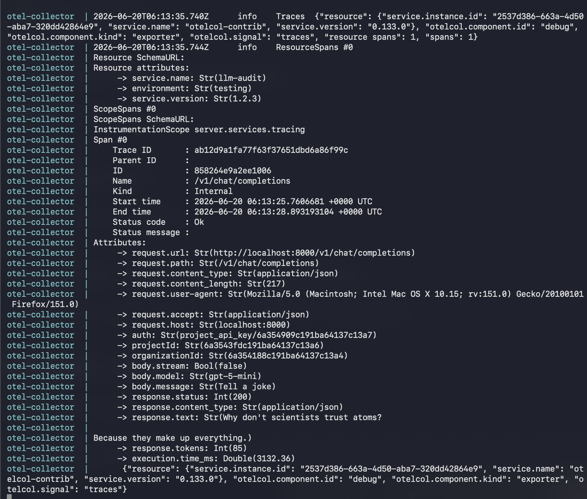
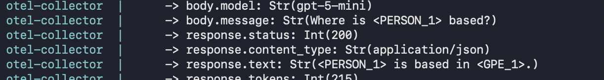
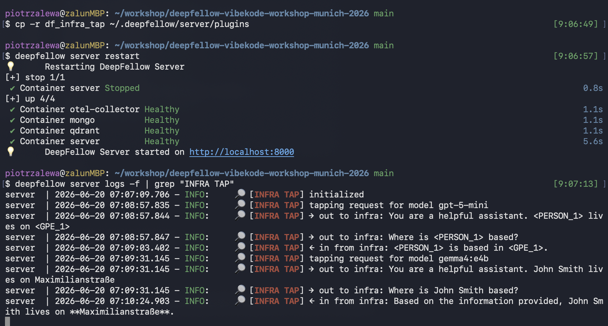

Agenda
- Group setup & prerequisites
- DFInfra (cloud) — admin: add ollama + gemma
- CLI + DFServer install
- First API call via Swagger
- Add local DFInfra (Child) + mesh connect
- Call GPT via mesh
- PII anonymization
- df_infra_tap plugin
Group setup
- Form 3 groups — each gets a DFInfra with A10G GPU
- Choose one DFInfra admin per group
Workshop repo
github.com/simplito/deepfellow-vibekode-workshop-munich-2026
Workshop chat
hack.chat/?workshop-DF-Munich-2026
Use a simple nick
On the chat you will find:
- Link to the repo
- OpenAI API Key
- 3× DFInfra URL + API Key + Mesh Key
Admin API Key will be sent to the chosen Infra admins
Prerequisite: install bore
# Homebrew
brew install ekzhang/bore/bore
# Cargo
cargo install bore-cliMore installation methods in README.md
DFInfra (cloud) admin only
Log in with the DFInfra Admin API Key provided on the chat.

Add ollama service

Choose GPU hardware

Downloading & installing…
This takes a few minutes — switch to CLI prep in the meantime

CLI install everyone
All commands are in README.md

Run the CLI
deepfellow
DFServer install everyone
You need DFInfra URL and DFInfra API Key from the chat.

Install options
| Prompt | Answer |
|---|---|
| MongoDB | y (default) |
| Use vectorDB | y (default) |
| Embedding type | dense |
| Database | qdrant (default) |
| Local DB | y (default) |
| Embedding model | mxbai (default) |
| Embedding size | 1024 (default) |
| Open Telemetry | n (default) |
| Run on local machine | y ← NOT default! |
| Elastic Search | n (default) |
Images are pulling now…
Install gemma admin
Check if ollama service finished installing, then add the model.

gemma4:e2b

Start the server everyone
deepfellow server start
Create admin account
deepfellow server create-adminRemember the credentials.
DFServer UI

Dashboard

Create Organization

Create Project

Create & copy API Key


Swagger docs
Log in with the Project API Key

Chat Completions → gemma4

Response ✅

Local DFServer → remote DFInfra on AWS
Architecture so far
DFServer on laptop talks directly to DFInfra on AWS.
Next: add local DFInfra
Everyone installs DFInfra on their laptop and connects it via mesh.
💻 DFInfra (Child) ↔ ☁️ DFInfra (AWS)
Local DFInfra install everyone

Log in to local DFInfra
Copy the DFInfra Admin API Key → log in.
Switch on Cloud services → find openAI.


Install gpt-5-mini

Expose DFInfra via bore
AWS DFInfra needs to reach the local one — expose it first.

Update the infra URL
Navigate to bore.pub — you will see your local infra with openAI.
Change the URL in DFInfra settings:
Set env vars
In a second terminal — you need the INFRA_MESH_KEY from the chat.

mesh connect
Use wss:// not ws://

Verify mesh
Check the local infra UI → mesh info

Call GPT via mesh
Back to Swagger — try gpt-5-mini (your alias)

Response from GPT ✅

DFServer → DFInfra (AWS) → DFInfra (Child) → OpenAI/GPT
Open Telemetry logs
Let's look at what we installed at the beginning.

What we see
- Input received by the server
- Raw response from infra
Next: stop sending private data to the cloud.
PII anonymization
Enable it for the GPT model:
deepfellow server env set PLUGINS_SETUP \
'{"df_anonymize_models": ["gpt-5-mini"]}'Test with personal data
Add personal info in the system prompt → ask where John Smith lives.
What anonymization does

Names replaced before leaving the server — restored in the response.
df_infra_tap plugin
Install from the repo:
cp -r server-plugins/df_infra_tap \
~/.deepfellow/server/plugins/deepfellow server restartTap the infra boundary
Call GPT again, then switch to gemma (no anonymization) and ask the same question.

What the tap shows
→ out to infra— payload after anonymization← in from infra— raw response before deanonymization
You can see both infras in the logs.